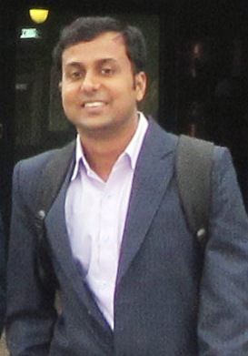

Microwave, Antenna
Email:
bidisha@iiitg.ac.in
Joined the Institute in July 2014.
Shovan Barma
Associate Professor & HoD
PhD (NCKU, Taiwan)
Research Interests:
Biomedical Signal & Image Processing, Emotion Recognition, Deep Learning.
Email:
shovan@iiitg.ac.in
hodece@iiitg.ac.in
Phone:
+91-94351-18700
Joined the Institute in August 2016.
Surajit Panja
Associate Professor
PhD (IIT Kharagpur)
Research Interests:
Control of Network Systems, Multi-agent Systems, Opinion Dynamics, Epidemic Propagation Over Networks, Robotics, Cyber Physical Systems
Email:
surajit@iiitg.ac.in
Joined the Institute in June 2015.
Assistant Professors
Babita Jajodia
Assistant Professor
PhD (IIT Guwahati)
Research Interests:
Low-power Transceiver (Baseband/RF) Design, VLSI for Signal Processing and Communications, Analog and Mixed-Signal Circuit Design, RISC Processor Design
Email:
babita@iiitg.ac.in
Joined the Institute in July 2019

Bijit Kumar Das
Assistant Professor
PhD (IIT Kharagpur)
Research Interests:
Adaptive Signal Processing, Sparsity Aware Adaptive Filters, Distributed Adaptive Filtering / Adaptive Networks, Signal Processing for Digital Communication, Signal Processing for Audio and Acoustic Applications and some other topics.
Email:
bijit@iiitg.ac.in
Joined the Institute in uly 2018
G.Aruna
Assistant Professor
PhD (IIT Guwahati)
Research Interests:
Wireless and Mobile communications, MIMO Systems Optical Character Recognition, Software Engineering.
Email:
g.aruna@iiitg.ac.in
Joined the Institute in may 2014.
Komal Janghel
Assistant Professor
PhD (IIT Delhi)
Research Interests:
Underlay cognitive radio networks, energy harvesting in the cognitive radio network and cooperative network, non-orthogonal multiple access, physical layer security.
Email:
komal@iiitg.ac.in
Joined the Institute in July 2018.
Kukil Khanikar
Assistant Professor
PhD (IIT Guwahati)
Research Interests:
kukil@iiitg.ac.in Email:
srinibas@iiitg.ac.in
Joined the Institute in July 2018.
Mohd. Mansoor Khan
Assistant Professor
PhD (IIT Guwahati)
Research Interests:
Electrical Machines and Drives, Control Systems, Advanced
Instrumentation and Sensors, Opto-Mechanical Sensors, Fiber Optics
and Photonics, Fiber Optic Lasers and All Optical Integrated Devices
Email:
mansoor@iiitg.ac.in
Joined the Institute in December 2012.
Mourina Ghosh
Assistant Professor
PhD (ISM Dhanbad)
Research Interests:
Current Mode Circuits, Bipolar and MOS Analog Integrated Circuits.
Email:
mourina@iiitg.ac.in
Joined the Institute in June 2015.
Rakesh Biswas
Assistant Professor
PhD (Tezpur University)
Research Interests:
Digital VLSI Circuits and Systems, Embedded VLSI Systems Design,
Image Processing, Biomedical
Signal Processing, Biomedical Instrumentation.
Email:
b.rakesh@iiitg.ac.in
Joined the Institute in July 2018.
Ripudaman Singh
Assistant Professor
PhD (IIT Guwahati)
Research Interests:
Communication Networks
Email:
ripudaman@iiitg.ac.in
Joined the Institute in January 2020.
Rusha Patra
Assistant Professor
Research Interests:
Image Processing, Optical Imaging, Biomedical Optics, Computer Vision.
Email:
rusha@iiitg.ac.in
Joined the Institute in July 2016.
Kolkata
Shilpa
Assistant Professor
PhD (IISc)
Research Interests:
Wireless Sensor Networks Email:
shilpa@iiitg.ac.in
Joined the Institute in July 2016.
Soumyajit Poddar
Assistant Professor
PhD (IIEST, Shibpur)
Research Interests:
Digital VLSI Design, Photonic Networks on Chip, Architecture for
Exascale Computing Systems, 3D-IC, Photonic Devices, Electronic
Design Automation, Embedded Systems and Medical Electronics
Email:
soumyajit@iiitg.ac.in
Joined the Institute in July 2016.
Sounak Roy
Assistant Professor
PhD (IIT Kharagpur)
Research Interests:
Analog and mixed signal circuits
Email:
sounak@iiitg.ac.in
Joined the Institute in July 2014.
Sudip Biswas
Assistant Professor
PhD (University of Edinburgh, Edinburgh, UK)
Research Interests:
Signal Processing for Wireless Communications, 5G & Beyond
Communications, Transceiver Design for Full-Duplex Radios, Dynamic
Spectrum Access, Wireless Edge Caching, Communication-Radar Co-
existence, Large Intelligent Surface Communications, Machine Learning
for Communications
Email:
sudip.biswas@iiitg.ac.in
Joined the Institute in August 2019.